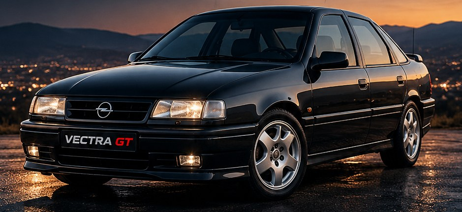

OTO TEŞHİS

OPELVectra A GTMotorunu seç, teşhise başla
Motor seçimi
Pilot sürüm: Teşhis soruları şu anda C20XE üzerinden geliştirilmiştir. X20XEV için ayrı teknik teşhis akışları hazırlanacaktır.
C20XE · Arıza teşhisi
Yakıt sistemiŞikâyet
Bu bölüm pilot sürümde henüz geliştirilme aşamasındadır.